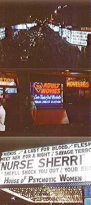

|
 |
When
Travis returned George
put her under strict curfew, which involved Mary Frances escorting her to and
from school...
...and George bolting her bedroom window from the outside. But during a lunch break Travis managed to call Candy from a pay phone, and they became friends, talking every day. One lunch hour Candy picked Travis up in a Ding-a-Ling cab that then took them both to West Egg station. They walked arm-in-arm to the Manhattan side of the platform, bound for Times Square. |